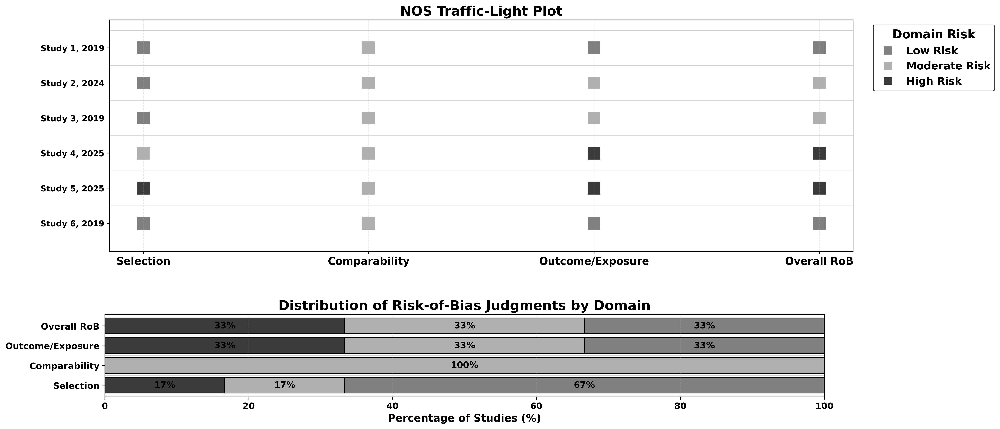
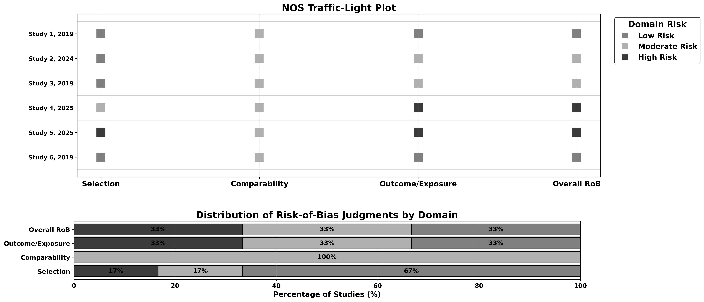
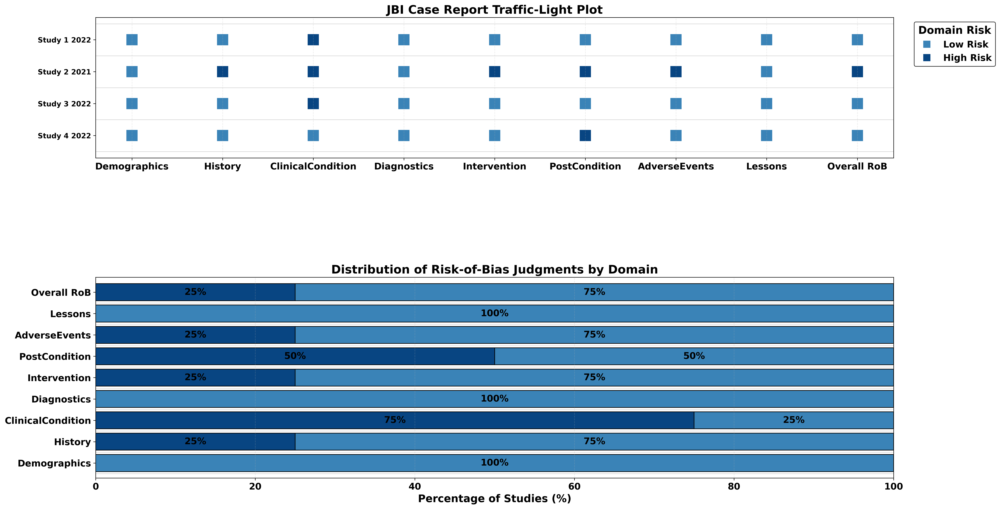
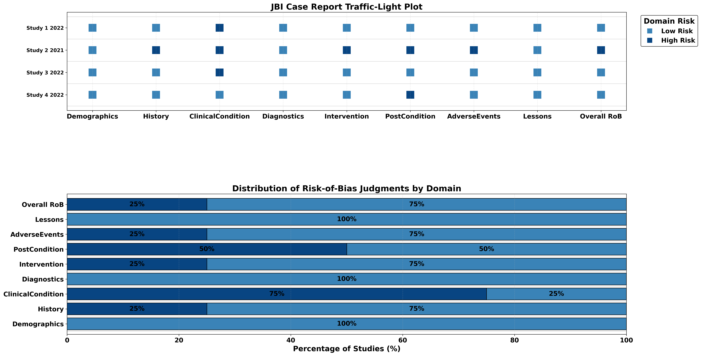

About Critiplot
Critiplot is a comprehensive web tool for visualizing multiple risk-of-bias assessment tools.
It helps researchers generate traffic light plots and weighted bar plots for various assessment methodologies including NOS, GRADE, ROBIS, JBI, and MMAT.
Built on Python, it complements evidence synthesis workflows while ensuring reproducibility and consistent visualization of your datasets.
Critiplot supports the following assessment tools:
- NOS (Newcastle-Ottawa Scale) - For assessing the quality of non-randomized studies
- GRADE (Grading of Recommendations Assessment, Development, and Evaluation framework) - For rating the certainty of evidence in systematic reviews
- ROBIS (Risk Of Bias In Systematic reviews) - For assessing risk of bias in systematic reviews
- JBI Case Report (Joanna Briggs Institute) - For critical appraisal of case reports
- JBI Case Series (Joanna Briggs Institute) - For critical appraisal of case series
- MMAT (Mixed Methods Appraisal Tool) - For appraising mixed methods studies
Key features of Critiplot include:
- Generation of intuitive traffic light plots for each study's risk-of-bias assessment.
- Weighted bar plots to summarize overall domain-level distributions across studies.
- Multiple visualization themes for each assessment tool.
- Publication-ready visualizations suitable for manuscripts, presentations, and reports.
- Open-source design to facilitate reproducibility and transparency in evidence synthesis.
With Critiplot, researchers can quickly interpret and communicate study-level risk-of-bias information across multiple assessment frameworks, ensuring both clarity and scientific rigor.
 



 



Above Streamlit web app busy? You can use the mirror:
Launch MirrorData Structure for Assessment Tools
Data Templates
Download ready-to-use templates for each assessment tool. Simply click to download the CSV or Excel format.
Note:
The tool is case-sensitive. Accordingly, the exact use of uppercase and lowercase characters, as presented in the Critiplot template for each, must be strictly adhered to.
NOS
GRADE
ROBIS
JBI Case Report
JBI Case Series
MMAT
NOS (Newcastle-Ottawa Scale)
To work correctly with Critiplot for NOS assessments, your uploaded table should follow this structure:
- First column: Study details (Author, Year)
- Domain columns: Each additional column corresponds to a specific NOS domain:
- Representativeness
- Non-exposed Selection
- Exposure Ascertainment
- Outcome Absent at Start
- Comparability (Age/Gender)
- Comparability (Other)
- Outcome Assessment
- Follow-up Length
- Follow-up Adequacy
- Total Score: Sum of the domain scores
- Overall RoB: Overall risk-of-bias judgement for each study (Low, Moderate, High)
| Author, Year | Representativeness | Non-exposed Selection | Exposure Ascertainment | Outcome Absent at Start | Comparability (Age/Gender) | Comparability (Other) | Outcome Assessment | Follow-up Length | Follow-up Adequacy | Total Score | Overall RoB |
|---|---|---|---|---|---|---|---|---|---|---|---|
| Study 1, 2019 | 1 | 1 | 1 | 1 | 1 | 0 | 1 | 1 | 1 | 8 | Low |
| Study 2, 2024 | 1 | 1 | 1 | 1 | 1 | 0 | 1 | 1 | 0 | 7 | Moderate |
GRADE
For GRADE assessments, your uploaded table should follow this structure:
- Outcome: Name of the outcome
- Risk_of_Bias: Risk of bias judgement (Serious, Not Serious, Very Serious)
- Inconsistency: Inconsistency judgement (Serious, Not Serious, Very Serious)
- Indirectness: Indirectness judgement (Serious, Not Serious, Very Serious)
- Imprecision: Imprecision judgement (Serious, Not Serious, Very Serious)
- Publication_Bias: Publication bias judgement (Serious, Not Serious, Very Serious)
- Overall_Certainty: Overall certainty judgement (High, Moderate, Low, Very Low)
| Outcome | Risk_of_Bias | Inconsistency | Indirectness | Imprecision | Publication_Bias | Overall_Certainty |
|---|---|---|---|---|---|---|
| Mortality | Serious | Not Serious | Not Serious | Serious | Not Serious | Low |
| Infection | Serious | Very Serious | Not Serious | Not Serious | Not Serious | High |
ROBIS
For ROBIS assessments, your uploaded table should follow this structure:
- Review: Review identifier
- Study Eligibility: Risk of bias judgement (Low, Unclear, High)
- Identification & Selection: Risk of bias judgement (Low, Unclear, High)
- Data Collection: Risk of bias judgement (Low, Unclear, High)
- Synthesis & Findings: Risk of bias judgement (Low, Unclear, High)
- Overall Risk: Overall risk of bias judgement (Low, Unclear, High)
| Review | Study Eligibility Criteria | Identification & Selection of Studies | Data Collection & Study Appraisal | Synthesis & Findings | Overall RoB |
|---|---|---|---|---|---|
| Study 1 2021 | Low | High | Unclear | Low | High |
| Study 2 2020 | Low | Low | Low | Low | Low |
JBI Case Report
For JBI Case Report assessments, your uploaded table should follow this structure:
- Author,Year: Study identifier (e.g., "Smith, 2020")
- Demographics: Score (0 or 1)
- History: Score (0 or 1)
- ClinicalCondition: Score (0 or 1)
- Diagnostics: Score (0 or 1)
- Intervention: Score (0 or 1)
- PostCondition: Score (0 or 1)
- AdverseEvents: Score (0 or 1)
- Lessons: Score (0 or 1)
- Total: Sum of the domain scores
- Overall RoB: Overall risk of bias judgement (Low, High)
| Author,Year | Demographics | History | ClinicalCondition | Diagnostics | Intervention | PostCondition | AdverseEvents | Lessons | Total | Overall RoB |
|---|---|---|---|---|---|---|---|---|---|---|
| Study 1,2022 | 1 | 1 | 0 | 1 | 1 | 1 | 1 | 1 | 7 | Low |
| Study 2,2021 | 1 | 0 | 0 | 1 | 0 | 0 | 0 | 1 | 3 | High |
JBI Case Series
For JBI Case Series assessments, your uploaded table should follow this structure:
- Author,Year: Study identifier (e.g., "Smith, 2020")
- InclusionCriteria: Score (0 or 1)
- StandardMeasurement: Score (0 or 1)
- ValidIdentification: Score (0 or 1)
- ConsecutiveInclusion: Score (0 or 1)
- CompleteInclusion: Score (0 or 1)
- Demographics: Score (0 or 1)
- ClinicalInfo: Score (0 or 1)
- Outcomes: Score (0 or 1)
- SiteDescription: Score (0 or 1)
- Statistics: Score (0 or 1)
- Total: Sum of the domain scores
- Overall RoB: Overall risk of bias judgement (Low, High)
| Author,Year | InclusionCriteria | StandardMeasurement | ValidIdentification | ConsecutiveInclusion | CompleteInclusion | Demographics | ClinicalInfo | Outcomes | SiteDescription | Statistics | Total | Overall RoB |
|---|---|---|---|---|---|---|---|---|---|---|---|---|
| Study 1,2022 | 1 | 1 | 1 | 1 | 1 | 1 | 1 | 1 | 1 | 1 | 10 | Low |
| Study 2,2021 | 1 | 0 | 1 | 1 | 0 | 1 | 0 | 1 | 0 | 0 | 5 | High |
MMAT (Mixed Methods Appraisal Tool)
For MMAT assessments, your uploaded table should follow this structure:
- Author_Year: Study identifier (e.g., "Smith, 2019")
- Study_Category: One of: Qualitative, Randomized, Non-randomized, Descriptive, Mixed Methods
- Appropriate randomization: Score (Yes, No, Can't tell) - applicable for Randomized and Mixed Methods
- Groups comparable at baseline: Score (Yes, No, Can't tell) - applicable for Randomized, Non-randomized, and Mixed Methods
- Complete outcome data: Score (Yes, No, Can't tell) - applicable for all except Qualitative
- Outcome assessors blinded: Score (Yes, No, Can't tell) - applicable for Randomized, Non-randomized, and Mixed Methods
- Adherence to intervention: Score (Yes, No, Can't tell) - applicable for Randomized, Non-randomized, and Mixed Methods
- Overall_Rating: Overall rating (High, Moderate, Low)
| Author_Year | Study_Category | Appropriate randomization | Groups comparable at baseline | Complete outcome data | Outcome assessors blinded | Adherence to intervention | Overall_Rating |
|---|---|---|---|---|---|---|---|
| Smith, 2019 | Qualitative | Yes | Yes | Yes | Yes | Yes | High |
| Johnson, 2024 | Qualitative | Yes | No | Yes | Can't tell | Yes | Moderate |
| Williams, 2019 | Randomized | Yes | Yes | Yes | No | Yes | Moderate |
| Davis, 2019 | Non-randomized | Yes | Yes | Yes | No | Yes | Moderate |
| Wilson, 2019 | Descriptive | Yes | Yes | Yes | Yes | Yes | High |
| Taylor, 2019 | Mixed Methods | Yes | Yes | Yes | Yes | Yes | High |
Support & Contact
Have questions or need assistance with Critiplot? This tool is designed for reproducible research, and we are here to help you integrate it into your workflow.
You can open a GitHub Issue or send an email directly for guidance, troubleshooting, or feature requests.
Python Package
Critiplot is also available as a Python package for local use. You can install it via pip:
pip install critiplotOnce installed, you can use Critiplot in your Python scripts to generate risk of bias visualizations programmatically.
Benefits of using the Python package:
- Integrate Critiplot directly into your data analysis workflows
- Automate visualization generation for large datasets
- Customize plots with advanced parameters
- Use Critiplot in Jupyter notebooks and other Python environments
For documentation and examples, visit the GitHub repository or the PyPI page.
Citation
If you use Critiplot to create risk-of-bias plots for your study, please remember to cite the tool.
Sahu, V. (2025). Critiplot: A Critical Appraisal Plot Visualiser for Risk of Bias in Systematic Reviews and Meta-Analyses (v2.1.0). Zenodo. https://doi.org/10.5281/zenodo.17236600